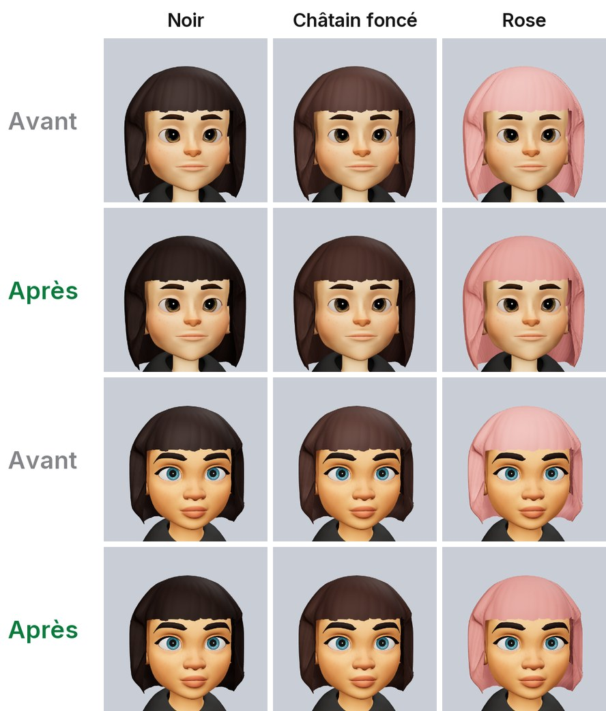
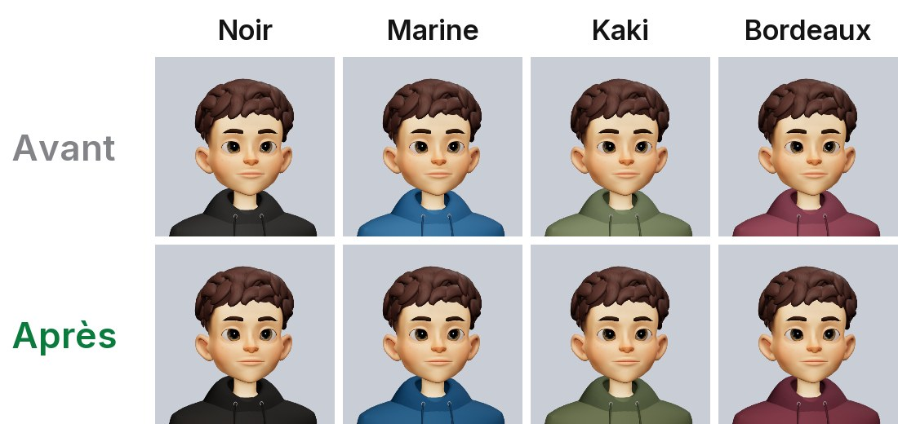
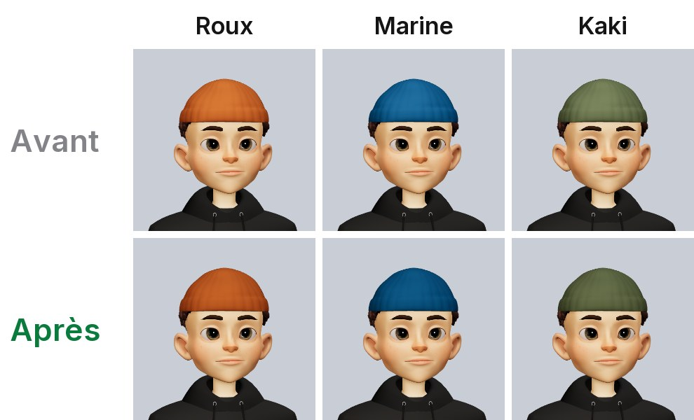
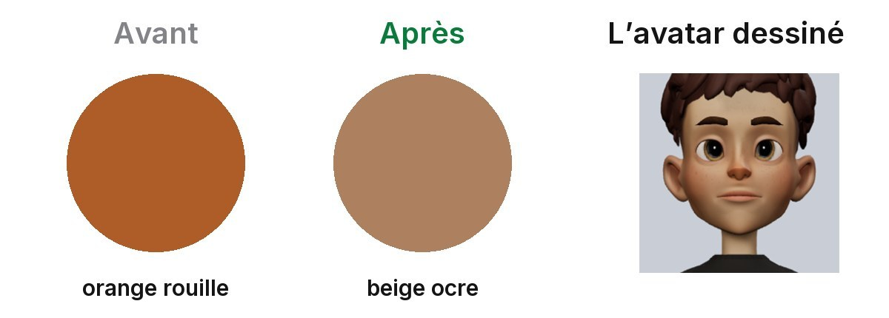
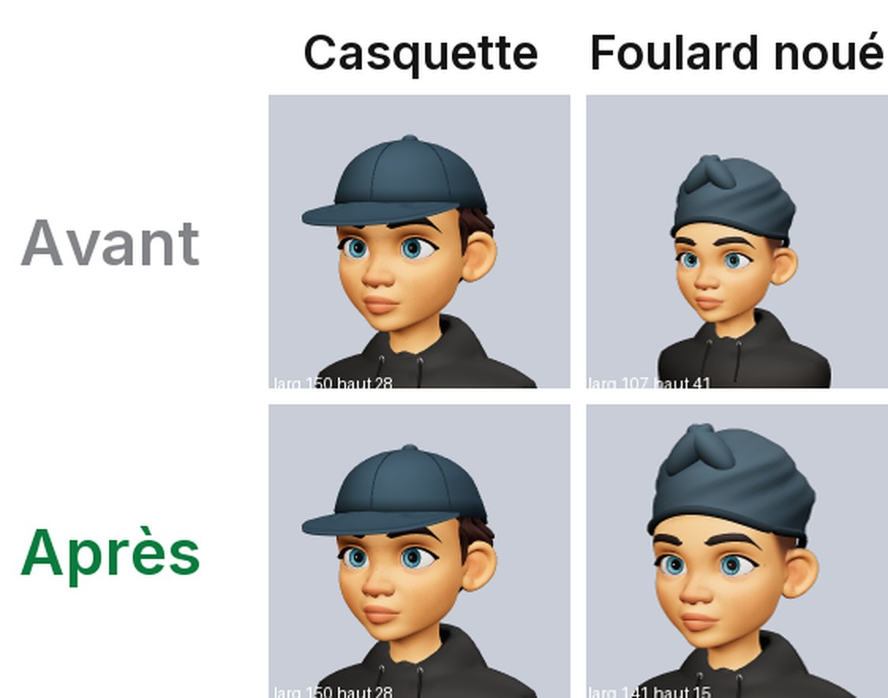

Ce qu’il y a dans le build de ce soir, PR par PR
06/10/2026 : le build iOS 191 est parti chez Apple à 20 h 57, il arrive sur TestFlight. Une image par PR. Les captures viennent du simulateur, prises aujourd’hui. Le cadre bleu montre où ça change. Pour les avatars, ce sont de vrais rendus avant et après : touche une image pour l’agrandir.
Ce qui se voit
Les cheveux ont enfin la couleur choisie
Avant, un reflet ajoutait un voile gris : le noir sortait brun, et le rose délavé.
Maintenant, la couleur dessinée est celle de la pastille que tu touches.


Les vêtements aussi
Le sweat sortait délavé, surtout dans les couleurs foncées.
Maintenant, il a la couleur de sa pastille.


Les bonnets et les casquettes aussi
Ils gardaient encore le voile gris après la correction des vêtements.
Maintenant, un bonnet a la même couleur que le sweat de la même pastille.


La pastille de peau « tan » montre la vraie teinte
Dans l’éditeur, la pastille était orange rouille, alors que l’avatar est dessiné en beige ocre.
Tu choisissais une couleur et tu en recevais une autre. Aucun avatar déjà fait ne change.


La vignette du foulard noué est cadrée comme les autres
Dans la rangée des couvre-chefs, l’avatar du foulard était plus petit que sur les autres vignettes.


Quand tu te poses une question, la puce Anonyme est là
C’est ta demande de cette nuit : le petit bouton anonyme, comme sur les autres profils.
La question est signée par défaut, comme partout ailleurs.
Un take ouvert depuis Amis n’a pas de graphique
C’est ta règle du 05/10 : Amis, zéro graphique.
Avant, en ouvrant un take d’Amis par l’aperçu (appui long), le graphique revenait. Maintenant, il reste absent.
Aussi : changer le tri des commentaires garde la liste à l’écran, et le menu d’un commentaire propose Signaler et Bloquer quand il le faut. La bande du haut n’écrit plus « Anonyme » pour un take de l’IA.
La ligne Amis · Takes · Score arrive d’un bloc
Avant, pendant le chargement, elle affichait « Score 0 », puis le vrai score arrivait et la ligne glissait.
Maintenant, elle reste invisible à sa place, puis apparaît entière. Ta règle : rien ne bouge sous les yeux.
Plus aucun fond gris pendant les chargements
Les fonds gris qui restaient (onglet Questions, Top 8, Jeu, première ouverture) ne se dessinent plus.
Les zones de toucher des petits boutons sont aussi agrandies, sans rien changer au dessin, et sans jamais déborder sur le voisin.
Le fantôme d’anonymat fait vraiment ce qu’il dit
Avant, sous une question du fil, ta réponse partait avec ton nom, même fantôme allumé.
Et toucher le fantôme après avoir voté ne changeait pas ton vote. Maintenant, les deux suivent le fantôme.
Aussi : la barre du bas ne passe plus au noir quand un take voté en anonyme glisse dessous.
Ce qui change sans se voir
Changer un vote anonyme depuis Explorer le garde anonyme
Avant, si tu changeais ici un vote posé en anonyme, il devenait public.
Maintenant, il reste anonyme. Rien ne change à l’écran.
Amis : les nouveaux takes s’affichent, et toucher l’heure ramène en haut
Toucher « ↑ nouveaux takes » remontait sans montrer les nouveaux takes. Maintenant, ils s’affichent.
Toucher l’heure tout en haut remonte, et la barre du haut revient. Et Takes ne s’ouvre plus sur une page blanche.
Explorer : la recherche répond plus vite et garde sa liste
Retoucher un hashtag relance sa recherche. Les résultats arrivent dès la première page, au lieu d’attendre.
Et changer d’onglet garde la liste à l’écran jusqu’à la nouvelle, comme X.
« Publier » vibre au toucher et marche même hors ligne
La vibration arrivait à la réponse du serveur, parfois plusieurs secondes après. Maintenant, elle part au toucher.
Hors ligne au lancement, « Publier » restait gris : maintenant il marche. Et à la connexion, « Renvoyer le code » remarche avec le captcha.
Une photo ne fabrique plus de GIF quand tu fais défiler
Poser le doigt pour faire défiler préparait un GIF à chaque fois, pour rien.
Maintenant, il se prépare seulement si ton doigt reste 0,2 s. Et un commentaire qui n’a pas pu partir revient dans le champ.
Répondre à une question part tout de suite
Avant, « Publier ma réponse » attendait le serveur, et pouvait afficher « Le chargement a échoué ».
Maintenant, la carte part au toucher. Si le réseau coupe, la réponse repart toute seule. Seul un refus fait revenir la carte.
Aussi : la limite de caractères ne coupe plus un émoji en deux.
Côté serveur, déjà en ligne sur staging
Takes ne propose plus de take sans contexte (#3994).
Une réponse envoyée deux fois ne compte qu’une fois, sans renotifier (#4022).
L’agent de Jordan, 13 PR : le coût des écritures en base, plus d’erreur 500 sur un envoi vide, les statistiques du profil gardées même partielles, et des mesures de staging.
Pas dans ce build
La suppression du compte après 24 h (#4004) et le liseré de l’avatar (#3960) attendent ton oui, points 1 et 30 de la page à trancher.
Le profil public vu sans compte (#4011) attend une PR de Jordan. Les PR Android attendent leur build Android.